Овде ќе се воведе базичен терминолошки речник на теоријата на графовите. Речникот ќе се користи при решавање на многу различни видови проблеми. Исто така, ќе се претстават неколку важни семејства на графови кои често се користат како примери и во моделите. Ќе бидат опишани неколку важни апликации каде ќе се појават овие специјални типови на графикони.
Основна терминологија
Прво ќе ја дадеме терминологијата која ги опишува јазлите и ребрата кај неориентираниот граф.
Дефиниција 1
Две темиња `u` и `v` во неориентиран граф `G` се нарекуваат соседни во `G` ако `u` и `v` се крајни точки на некое ребро во `G`.
Ако `e={u,v}`, се вели дека `е` ги поврзува `u` и `v` или е инцидентно со `u` и `v`
Исто така од корист е и терминологијата која го опишува множеството на јазли кое е соседно на одреден јазол од графот.
Дефиниција 2
Множеството од сите соседи на јазолот `v` од `G = (V, E)`, се означува со `N(v)`, и се вика соседство на на `v`. Ако `A` е подмножество од `V` , со N(A) го означуваме множеството во `G` кое е сосед на најмалку еден јазол во `A`. Од тука `N(A) = uuu_(v in A) N(v)`.
За да може да се одреди колку ребра се врзани на јазелот, се користи следната дефиниција.
Дефиниција 3
Степен на едно теме во неориентиран граф е бројот на ребра кои поврзани со него, освен што алка се брои два пати, Степенот на јазелот се означува со `deg(v)`.
Пример 1. Кој е степенот кои се соседните јазли на јазлите во графот `G` и `H` прикажани на сликата 1?
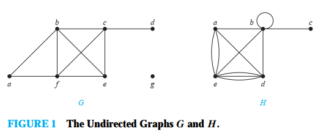
Решение:
граф `G`
`deg(a) = 2`, `deg(b) = deg(c) = deg(f) = 4`, `deg(d) = 1`, `deg(e) = 3`, и `deg(g) = 0`.
Соседи на јазлите се: `N(a) = {b, f}`, `N(b) = {a, c, e, f}`, `N(c) = {b, d, e, f}`, `N(d) =
{c}`, `N(e) = {b, c, f }`, `N(f ) = {a, b, c, e}`, и `N(g) = ∅`.
граф `H`
`deg(a) = 4`, `deg(b) = deg(e) = 6`, `deg(c) = 1`, и `deg(d ) = 5`
Соседи на јaзлите се: `N(a) = {b, d, e}`, `N(b) = {a, b, c, d, e}`, `N(c) = {b}`, `N(d) =
{a, b, e}`, и `N(e) = {a, b, d}`.
Јазол се степен нула се вика изолиран јазол. Изолираниот јазол не е соседен со ниту еден јазол.
Пример 2. Кој е степенот на јазелот во графот а преклопување во екологијата ? Кои јазли во овој граф се соседи а кои се приврзоци?

Решение:
`deg(Rac`co`on) = 3`, `deg(Hawk) = 3`, deg(Owl) = 3`, deg(Oposs`u`m) = 3`, `deg(Squirrel) =
4`, `deg(Crow) = 3`, `deg(Shrew)= 3`, `deg(Mouse) = 1` и `deg(Wo`o`dpecker) = 3`
Соседи на јазлите се: `Raccoon, Haw, Owl, Opossum, Squirrel, Crow, Shrew, Woodpecker
Привезок е Mouse бидејки има само степен = 1.
Што се добива кога ќе се соберат сите степени од сите јазли од графот `G = (V, E)`? Секое ребро додава два на сумата од степенот бидејки реброто поврзува два јазли. Ова значи дека сумата од степените на јазлите е двапати поголема од бројот на ребрата. Ова е искажано со теоремата 1 која се нарекува теорема на ракување (и е исто така позната као лема на ракување).
Теорема на ракување
Нека `G = (V, E)` е неориентиран граф со `m` јазли. Тогаш:
`2m = sum_(v in V) deg(v)`.
Забелешка: Ова важи и кога графот има повеќекратни ребра и алки
Пример 3. . Колку ребра има граф со 10 јазли, секој со степен 6.
Решение:
Бидејки сумата на степените на јазлите е `6 * 10 = 60`, следи дека `2m = 60` каде `m` е
бројот на ребра. Од тука `m = 30`.
Теоремата 1 покажува дека сумата на степените на неоирентиран граф е парен број. Овој едноставен факт има значајни последици, една од нив е дадена во теоремата 2.
Теорема 2
Неориентиран граф има парен број на јазли кои се со непарен степен.
Доказ Нека `V1` и `V2` сe множество на јазли со парен степен и множество на јазли со непарен степен.
`2m = sum_(v in V) deg(v) = sum_(v in V_1) deg(v) + sum_(v in V_2) deg(v)`
Бидејки `deg(v)` е парен број за `v in V1`, првиот член на десната страна од равенството е парен број. Уште повеќе сумата на двата члена од десната страна на равенството е парен број бидејки е `2m`. Од тука и вториот член на десната страна од равенството е парен број. Бидејки сите членови во оваа сума се непарни броеви тогаш бројот на овие членови мора да e парен број.
Терминологијата за графови со ориентирани ребра го одразува фактот дека ребрата воориентиран факт имаат смер.
Дефиниција 4
Кога `(u, v)` е ребро на графот `G` се вели дека `u` е сосед на `v` а `v` е сосед од `u`. Јазелот `u` се нарекува иницијален јазел а `v` се нарекува краен јазол.
Бидејки ребрата во граф со ориентирани ребра се подредени парови, дефиницијата за степен на јазол може да се усогласи за да го претстави бројот на ребра со овој јазол како иницијален јазол и како краен јазол.
Дефиниција 5
Во ориентиран граф, влезен степен на јазол `v`, означен како `deg ^(-) (v)`, е
бројот на ребра со `v` како нивни краен јазол. Излезен степен, означен како `deg
^(+)(v)`, е
бројот
на ребра со `v` како нивен иницијален јазол.
Забелешка: Алка додава еден и кај влезниот и излезниот степен на јазолот.
Пример 4. Да се одреди влезниот степен и излезниот степен на секој јазол на графот `G` со ориентирани ребра даден на сликата 2.
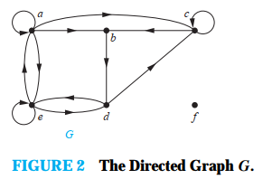
Решение:
Влезни степени:
`deg ^(-)(a) = 2`, `deg ^(-)(b) = 2`, deg ^(-)(c) = 3`, deg (-)(d) = 2`, `deg (-)(e) = 3` и
`deg(-)(f) = 0`
`deg ^(+)(a) = 4`, `deg ^(+)(b) = 1`, deg ^(+)(c) = 2`, deg (+)(d) = 2`, `deg (+)(e) = 3` и
`deg(+)(f) = 0`
Бидејки секое ребро има влезен јазол и излезен јазол, сумата на излезните степени и сумата на влезните степени на сите јазли во графот е иста. И двете суми се бројот на ребра во графот. Овој резултат е искажан во теоремата 3.
Теорема 3
Нека `G = (V, E)` е граф со ориентирани ребра. Тогаш:
`sum_(v in V) deg ^(-)(v) = sum_(v in V) deg ^(-) (v) = abs(E)`
Има многу особини на ориентираниот граф кои не се во зависност од на ориентираноста на неговите ребра. Како последивца на ова, често е корисно да се игнорираат овие ориентираности. Неориентираниот граф кој е резултат на игнорирање на ориентираноста на ребрата се нарекува изведен неориентиран граф. Ориентираниот граф и изведениот неориентиран граф имаат ист број на ребра.
Некои специјални едноставни графови
Ќе претставиме неколку класи на едноставни графови. Овие графови често се користат как опримери или се јавуваат во многу апликации.
Комплетен граф Комплетен граф од `n` јазли, означен како `K_n`, е едноставен граф кој има точно едно ребро помеѓу секој пар од различни јазли. Графовите за `K_n`, за `n = 1, 2, 3, 4, 5, 6` , се прикажани на сликата 3. Едноставен граф каде постои најмалку еден пар на различни јазли неповрзани со ребро се вика некомплетег граф.
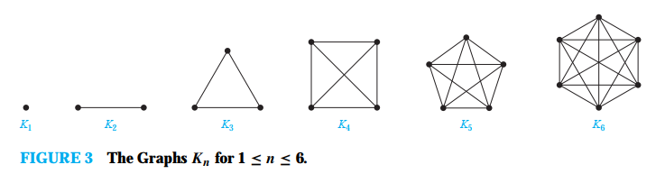Циклус граф означен како `c_n`, каде `n>=3` се состои од јазлите `v_1, v_2, . . . , v_n` и ребрата `{v_1, v_2}`, `{v_2, v_3}`, . . . , `{v_(n−1), v_n}`, и `{v_n, v_1}`. Циклисот `C_3`,`C_4`, `C_5`, и `C_6` е претставен на слика 4.
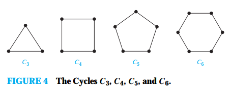Тркало граф се означува како `W_n` и се добива кога на циклус графот му се додава дополнителен јазол и истиот се повре со сите јазли во циклус графот. Тркало граф `W_3`, W_4`, `W_5` и `W_6` е прикажано на слика 5.
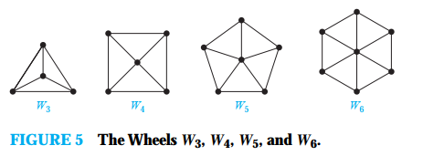`n` Коцка означена со `Q_n`, е граф кој има јазли кои претставуваат `2^n` низа со должина `n`. Два јазли се соседни ако и само ако бројните низи кои ги претставуваат се разликуваат во еден бит.
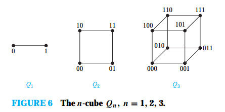Бипартитен (дводелен) граф
Понекогаш графот има особина дека множеството на јазли може да се подели во две неповрзани подмножества така да секое ребро поврзува јазол во едно од овие подмножества со јазол во другото подмножество. На пример, да го земеме во предвид графот кој ги претставува браковите во едно село, каде секоја личност е претставена со јазол во подмножеството на јазли кое ги претставуваат мажите и јазол во подмножеството на јазли кое ги претставува жените. Ова води до дефиницијата 5.
Дефиниција 5
Едноставен граф `G` се нарекува дводелен ако неговото множество од јазли `V` може да се подели во две неповрзани подмножества `V1` и `V2` така да секое ребро поврзува јазол од `V_1` и јазол `V_2` (така да нема ребро во `G` кое поврзува два јазли во `V_1` или два јазли во `V_2`). Кога овие услови се исполнети, тогаш парот `(V_1, V_2)` е бибартиција на множеството јазли.
Во примерот 9 ќе се покаже дека `C_6` е дводелен граф а во примерот 10 дека `K3` не е дведелен граф.
Пример 9. Графот `C_6` e дводелен граф бидејки неговото множество на јазли може да се подели на две множества `V_1 = {v_1, v_3, v_5}` и `V_2 = {v_2, v_4, v_6}`, и секое ребро од `C_6` поврзува јазол во `V_1` и јазол во `V_2`.
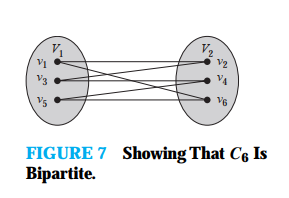Пример 10. `K_3` не е дводелен граф. Ако пробаме да го поделиме множеството на јазли во две неповрзани множества едното мора да има два јазли. Ако графот е дводелен овие два јазли не можат да бидат поврзани со ребро. Но кај `K_3_` секој јазол е поврзан со секој друг јазол со ребро.
Пример 11. Дали грфовите `G` и `H` претставени на слика 8 се дводелни?
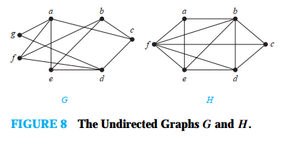
Решение: Графот `G` е дводелен бидејки неговото множество на јазли е унија
на две раздвоени множества `{a, b, d}` и `{c, e, f, g}`, и секое ребро поврзува јазел од
едно од овие множества со јазол во другото множество. (Треба да се забележи дека за да `G`
биде дводелен графне е потребно да секој јазол `{a, b, d}` биде сосед на секој јазол во `{c,
e, f, g}`. На пример `b` и `g` не се соседи.)
Графот `H` не е дводелен бидејки неговото множество не може да се подели на две подмножества
така да ребрата не поврзуваат два јазли од исто множество. (Види јазол `a`, `b`, и `f`.)
Теоремата 4 дава критериум за одредување кога еден граф е дводелен.
Теорема 4
Едноставен граф е дводелен ако и само ако е можно да се додели eдна од две различни бои на секој јазол од графот така да два соседни јазли немаат иста боја.
Доказ: Да претпоставиме дека `G = (V, E)` е дводелен едноставен граф. Тогаш `V = V_1 uu V_2`, каде `V_1` и `V_2` се неповезани множества и секое ребро во `E` поврзува јазол во `V_1` и јазол во `V_2`. Ако се додели една боја на секој јазол во `V_1` и друга боја на секој јазол во `V_2`, тогаш нема два соседни јазли кои имаат иста боја.
Сега да претпоставиме дека е можно да се додеалат две бои на јазлите на графот така да нема два соседни јазли кои имаат иста боја. Нека `V_1` е множеството на јазли на кое му е доделена првата боја а `V_2` е множеството на јазли на кое му е доделена другата боја. Тогаш `V_1` и `V_2` се неповрзани и `V = V1 uu V2`. И уште повеќе, секое ребро кое поврзува јазол во `V_1` и јазол во `V_2` бидејки нема два соседни јазли кои се или во `V_1` или во `V_2`. Според ова, `G` е дводелен граф.
Ќе покажеме како теоремета 4 може да се употреби за да се одреди дали одереден граф е дводелен или не.
Пример 12. Со употреба на теорема 4 да се одреди дали графот од примерот 11 е дводелен.
Решение: Прво ќе го разгледаме графот `G`.Ќе се обидеме да доделиме една од двете бои, да речеме црвена и сина, на секој јазол во `G` така да ниедно ребро не поврзува црвен јазол и син јазол. Ќе отпочнеме со произволно доделување на бои прво црвена на a. Тогаш на мора на јазлите c, e, f и g да им се додели сина боја бидејки се соседни ијазли со јазелот а. За да се избегне ребро со два јазли со сина боја, мора да се додели црвена боја на сите јазли соседи на c, e, f и g. Ова значи дека мора да се додели црвена боја b и d. Сега на сите јазли им е доделена боја. Црвени јазли се a, и b d а сини јазли се c, e, f и g. Вака добиме да секое ребро поврзува црвен јазол со син јазол. Според теоремата 4 графот е дводелен.
Сега ќе се обидеме да доделиме или црвена или плава боја на секој јазол во графот `H` така да нема ребро кое поврзува црвен јазол со син јазол. Прво нека доделиме црвена боја на јазолот а. Потоа мораме да доделиме сина на јазлите b, e и f како соседи на a. Но ова не е можно бидејки е и f се соседни јазли така да двата не можат да имаат иста боја. Според теорем 4 графот не е дводелен
Теоремата 4 во делот на теорија на графовои е позната како боење на граф.
Пример 13. Комплетен дводелен граф `K_(m,n)` е граф кој има множество на јазли поделено во во две подмножества `m` и `n`, и ребра помеѓу два јазли ако и само ако еден јазол е во првото подмножество а другиот јазол е во второто подмножество. Комплетен дводелен граф `K_(2,3)`, `K_(3,3)`, `K_(3,5)`, и `K_(2,6)` се прикажани на слика 9.
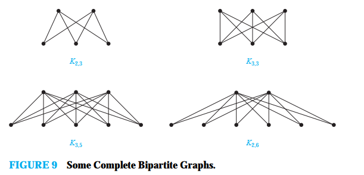Дводелен граф и совпаѓање
Дводелен граф може да се употреби за да се моделираат многу типови на апликации кои вклучуваат совпаѓање на елементи од едно множество со друго, како во примерот 14.
Пример 14. Работни задачи: Да претпоставиме дека имаме `m` запослени во групата `a` и `n` различни работни задачиe кои треба да се извршат и каде `m ≥ n`. Секој запослен е обучен за една или повеќе работни задачи од `n`. Сакаме да доделиме запослен на секоја работна задача. За да ја ивршиме оваа задача можеме да искористиме граф за да изградиме модел на способности на запослените. Секој запослен ќе го претставиме со јазол и секоја работна задача со јазол. За секој запослен ќе вклучиме ребро од запослениот кон секоја работна задача за која запослениот е обучен. Множеството на јазли на овој граф може да се раздели во два неповрзани множества., множество на запослени и множество на работни задачи каде секое ребро поврзува запослен со работна задача. Како последица на ова добиваме дводелен граф каде бипартицијата е `(E, J)` и каде `E` е множеството на запослени а `J` е мнеството на работни задачи. Сега имаме две можни сценарија.
Прво да претпоставиме дека групата на запослени е од четри члена. Alvarez, Berkowitz, Chen, и Davis; и да претпоставиме дека имааме четри работни задачи за да го комплетираме проектот 1: барање, архитектура, имплементација и тестирање. requirements, architecture, implementation, and testing. Да претпоставиме дека Alvarez е обучен за барања и тестирање; Berkowitz е обучен за архитектура, имплементација и тестирање; Chen е обучен за барања, архитектура и имплементација и Davis е обучен само за барања. Моделот за способности го градиме употребувајки дводелен граф прикажан на сликата 10(a).
Второ, да претпоставиме дека имамае втора група на запослени од четри члена: Washington, Xuan, Ybarra, and Ziegler; и да претпоставиме дека истите работни задачи треба да се извршат за да се заврши проектот 2. Да препоставиме дека Washington е обучен за архитектура, Xuan е обучен за барања, имплементација и тестирање, Ybarra е обучен за архитектура и Ziegler е обучен за барања, архитектура и тестирање. Моделот за способностите е прикажан на сликата 10(b).
. За да се заврши работата во проектот 1, мора да доделиме запослен на секоја работна задачатака да секоја работна задача има запослен доделен на неа и така да нема запослен кој има две работни задачи. Ова може да се оствари со давање на тестирањето на Alvarez, имплементацијата на Berkowitz, архитектурата на Chen и барањата на Davis како што е прикажана на сликата 10(a) (каде плавите линии ја прикажуваат оваа распределба).
За проектот 2 мораме на секоја работна задача да му доделиме запослен така да секоја работна задача има доделено запослен и секој запослен да нема повеќе од една работна задача. Но ова не е можно бидејки имаме само двајца запослени Xuan и Ziegler кои кои се обучени за најмалку една од трите работни задачи. Следствено не постои начин да доделиме троја различни запослени на три различни задачи така да секоја работна задача се додели на запослен со соодветна обука.
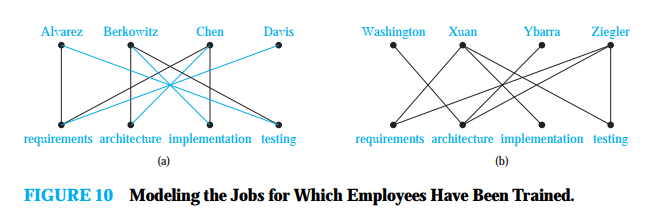---------- ОД ОВДЕ ПА НАТАКА СО ЦРВЕНО ГО НЕМА ВО ПРЕЗЕНТАЦИАЈАТА (НЕ Е ПРЕДАВАНО) ----------
Доделување на работна задача на запослени може да се смета дека е пронаоѓање на совпаѓање во граф, каде совпаѓањето `M` во едноставен граф `G = (V, E)` е подмножество од множеството `E` на ребра на графот така да две ребра не се поврзани со ист јазол. Со други зборови совпаѓањето е подмножесто од ребрата така да ако `{s, t}` и `{u, v}` се различни ребра на совпаѓањето тогаш `s`, `t`, `u`, и `v` се различни. За јазелот кој е крајна точка на реброто на совпаѓањето `M` вилеми дека е совпаѓање во `M`, во другиот случај вели дека не е совпаѓање. Максимално совпаѓање е совпаѓање со најголем број на јазли. За совпаѓањето `M` во двореднот граф `G = (V, E)` со бипартиции `(V_1, V_2)` велиме дека е комплетно совпаѓање од `V1` во `V2` ако секој јазол во `V_1` e крајна точка на ребро во совпаѓање односно ако `abs(M_1) = abs(V_1)`. На пример, за да се доделат работни задачи така да на запослен му се доделат најголем број на работни задачи потребно е да се најде максималното совпаѓање во графот кој е модел на способностите на запослените. За да се додели запослен на сите работни задачи бараме комплетно совпаѓање од множеството на работни задачи во множеството на запослени. Во примерот 14 ќе го најдеме комплетното совпаѓање од множеството на работни задачи во множеството на запослени за проектот 1, и ова совпаѓање е максимално совпаѓање и ќе покажеме дека не постои комплетно совпаѓање од множеството на работни задачи во множеството на запослени за проектот 2.T
Следи пример како совпаѓањето може да се употреби за да се изградои модел на бракови.
Пример 15. Бракови на остров: Бракови на островот Да претпоставиме дека на еден остров има `m` мажи и `n` жени. Секое лице има листа на припадници на спротивниот пол прифатливи како брачен другар. Конструираме бипартитен график `G = (V_1, V_2)` каде што `V_1` е множеството на мажи, а `V_2` е множеството на жени, така да се има ребро ако се прифатливи како брачен другар. Совпаѓањето во овој граф се состои од множество ребра, каде што секој пар од крајни точки на реброто е пар сопруга-сопруга. Максималното совпаѓање е најголем можно множество на брачни парови, а комплетно совпаѓање на `V_1` е множество на брачни парови каде секој маж е оженет но не и сите жени.
Нови графови од стар
Понекогаш е потребен само дел од графот за да се реши одреден проблем. На пример, може да е од интерес само делот од голема компјутерска мрежа која ги вклучува компјутерските центри во New York, Denver, Detroit, и Atlanta. Тогаш може да се игнорираат другите компјутерски центри и сите телефонски линии кои не поврзуваат два од ови четри центра. Во графот за големата мрежа можеме да ги отстраниме јазлите кои ги претставуваат сите други центри и да ги одстраниме сите ребра врзани со јазлите кои се отстранети. Н овој начин се добива помал граф кој се нарекува подграф од оргиналниот граф.
Дефиниција 7
Подграф од графот `G = (V, E)` е графот `H = (W, F)`, каде `W sube V` и `F sube E`. Подграфот `H` од `G` е вистински подграф од `G` ако `H != G`.
Пример 18. Графот `G` прикажан на сликата 15 е подграф од графот `K_5`. If we add the edge connecting c and e to G, we obtain the subgraph induced by W = {a, b, c, e}.
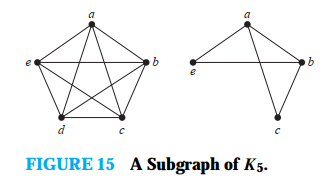---------- EOP ----------